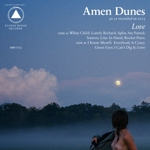

Second Chance Selection: January-June 2014
John Lennon once proclaimed that, “Life is what happens to us while we are making other plans.” Although he wasn’t referring to it, and he wasn’t even the first person to say it, it’s a quote that also relates to the reviewing of albums here at No Ripcord. While we’d love to cover every major release and all the records that pique our collective interest, it’s just not possible. Sometimes we run out of time, sometimes we can’t get hold of the album in question, sometimes something sneaks up on us and by the time we’ve fallen for its charms, the moment has gone.
In an attempt to go some way to addressing that, we present the No Ripcord Second Chance Selection; a number of albums that were released in the first half of 2014 that we didn’t review in full on the site, but that we couldn’t pass up the opportunity to wax lyrical about.
 Against Me! – "Transgender Dysphoria Blues"
Against Me! – "Transgender Dysphoria Blues"
Although enormous amounts of social progress around trans* issues has been made over the last few years, awareness and understanding of gender dysphoria is still woefully low. As long as ignorance and prejudice persists, coming out as transgender has to be one of the most difficult decisions a person can make. Against Me! frontwoman Laura Jane Grace came out a couple of years ago to heartwarming displays of support from her fans; this is their first music since then, and it’s a record of pop-punk anthems that will resonate profoundly for anyone who has ever experienced dysphoria or a transition. As the title suggests, this is less a political record, more an expressive one, because there’s nothing else that she needs to say about trans* rights other than, “You know it’s obvious / But we can’t choose how we’re made”. There’s never really been an album about this before; anything that gives words to people going through this, and so eloquently, is an important record. At its finest, it is devastating: “Standing naked in front of that hotel bathroom mirror / In her dysphoria's reflection, she still saw her mother's son”. Stephen Wragg
Amen Dunes – "Love"
It’s safe to assume that every weirdo eventually mellows out and decides to reinvent their art in a perhaps more conventional way. Damon McMahon has always been a folk eccentric at heart, inspired by the likes of Roky Erickson and Syd Barrett with his sauntering psychedelic soundscapes. But it doesn’t mean that McMahon is any less peculiar on his latest, the plainly-titled Love, in which he lays to rest the transportive “trips” of his past work to some measure and takes the opportunity to resemble a statelier troubadour. Not only does McMahon fit the part, but it reveals another side of his personality that’s even more mysteriously beguiling - his trembling howl sounds more refined, even at his most outlandish, performed alongside a series of bewitching ambient ballads that unfurl with an impassioned thoroughness. Love shows McMahon at his most plain-spoken, carrying himself with elegance and austerity, discovering the strength of his own emotions by returning to a more naive state. Juan Edgardo Rodriguez
 Chromeo – "White Women"
Chromeo – "White Women"
Chromeo may not actually be from France, but the Québécois duo display the same unabashed adoration for all things kitsch and the are-they-being-ironic-or-not character of Gallic groups like Justice, Phoenix and Mr. Oizo. Chromeo really take the pâtisserie though with White Women, a shameless pastiche of 70s disco, 80s AOR and yacht rock, which will leave you giddy with glee. The drumming is tighter than the skinniest of jeans, huge synths are joyfully prodded, and lead vocalist Dave 1 sings of parties, nostalgia and unobtainable socialites. The lyrics range from the mildly comic (“So why you coming at me, homie / With so much acrimony?”) to the cringe-inducingly awful (“It’s those little imperfections that make beauty in my eyes / I want to be at the intersection of your thighs”) but none of that seems to matter when you’ve forgotten your cares and can have a good time with Chromeo. Joe Rivers
 Cibo Matto – "Hotel Valentine"
Cibo Matto – "Hotel Valentine"
Cibo Matto is so quintessential to the feminist music movement that pervaded the mid-90s that it's hard to remember they actually only had two full-length albums in their discography prior to this reunion album. What's so fantastic about Hotel Valentine is how well it bridges the band's fifteen year release gap. They push into evolution and experimentation (try the title track on for size for an almost noir-like feel) while still maintaining their familiar staccato synth sound (10th Floor Ghost Girl is my pick for the album's best track). While this record may seem like more of the same for some, I think that's just what the doctor ordered. A slightly more polished and experimental Cibo Matto with less of the debut food-based schtick makes for a solid, modern release that outshines a lot of brand new releases from younger outfits. Gabbie Nirenburg
 EMA – "The Future’s Void"
EMA – "The Future’s Void"
For her second album, EMA moved outward, musically and lyrically. The Future's Void is a more complex and varied affair than her excellent, pain-filled debut, Past Life Martyred Saints. Rather than looking into her own past, Erika M. Anderson sings about the present and the future, a chaotic digital landscape of selfies, status updates and smartphones. While she's digging into an increasingly used-up well, her delivery on tracks like Cthulu sounds like she is living and dying with every word. The instrumentation matches the theme. Every song on the record is wired with an intensity that very few artists can successfully pull off. Looking for quick standouts? Listen to the noisy drone of Satellites, the grungy So Blonde, the stuttering electronica of Solace and the industrial clang of Neuromancer. Although this album doesn't create the same head-turning reaction California did, The Future's Void is a marked improvement from beginning to end. By switching gears lyrically and mastering the mix of discord and melody, EMA has crafted an endlessly listenable album that will go down as one of the year's best and most underrated. Joe Marvilli
 Chet Faker – "Built On Glass"
Chet Faker – "Built On Glass"
Yes, that name. It’s awful. So bad it makes calling your band Joanna Gruesome sound like a mature and sensible thing to do. But get past that and you’ll find that the relatively unheralded (at least, outside of Australasia) debut album from Melbourne’s Nick Murphy is one of the most rewarding records of the year. Chet Faker is ostensibly an artist working in the field of electronica, but there’s a real songwriting nous underpinning the experimentation, loops and audio decay – think of him as a James Blake with tunes. It’s daring, exciting music, but with killer choruses that will stay with you for days – try getting Talk Is Cheap out of your head in a hurry. Best of all though, is Melt, where the hushed vocals of Kilo Kish meld with Murphy’s production to create something that is reminiscent of the halcyon days of Bristolian trip-hop, yet is entirely fresh and new at the same time. Joe Rivers
 Have A Nice Life – "The Unnatural World"
Have A Nice Life – "The Unnatural World"
Describing a band’s music specifically as “depressing” usually comes off more as a taunting insult than a compliment, but Connecticut doom-gaze duo Have A Nice Life have been proudly wearing this descriptor like a badge of honour since describing their underappreciated debut, Deathconsciousness, as “the most depressing album ever made”. Of course, their music alone makes a strong case for this, as their atmospheric, pitch black approach to post-punk leaves no room for happy feelings of any sorts. So does their most recent follow-up, The Unnatural World, let in a few rays of sunshine this time? Of course not, but it is a much more concise and refined iteration of their distinct sound, and in many ways, it is much more palatable for those who found the black-hole proportions of Deathconsciousness a little too imposing. Sure, The Unnatural World can be just as gloomy and cavernous, with lengthy, desolate tracks like Music Will Untune The Sky and Emptiness Will Eat The Witch smothering you and leaving little room for air, but the album does take some mercy with a few notably energetic moments, like Cropsey, The Unholy Life, and Defenestration Song, which bring comparisons to Joy Division at their heaviest, and if they were recorded miles beneath the earth. Peter Quinton
Michael Jackson – "XSCAPE"
XSCAPE makes me wish that Michael (the album, not the artist) had never been foisted upon a grieving fandom. Unlike the first posthumous release, XSCAPE features the man himself much more prominently. I never found myself cringing to obvious limelight-stealing "collaborators" (*cough cough* Akon *cough cough*), but rather found the production to enhance Jackson's own voice, both figuratively and literally. Timbaland takes a much more delicate, respectful approach, resulting in an album that feels very true to Michael Jackson's aesthetic. A Place With No Name is really the only track that falls a bit flat; it has no exciting hooks, and isn't cheesy enough to work on the Man in the Mirror level that Do You Know Where Your Children Are gives us. But the real gem of this album is the first track and single, Love Never Felt So Good. Every iteration of this track is such a glorious earworm, a true feelgood 70s-inspired dance number. This track alone pulls the album up into best-of-the-year territory; nothing else has done as much justice to Jackson's legacy (and, predictably, Justin Timberlake's cover is fantastic). Gabbie Nirenburg
 Wilko Johnson & Roger Daltrey – "Going Back Home"
Wilko Johnson & Roger Daltrey – "Going Back Home"
Wilko Johnson, who has been diagnosed with pancreatic cancer, is currently recovering from a complex operation. This album, recorded in a rush last November, is both a summation of Johnson’s career and a testament to his fighting spirit. Yet there’s nothing maudlin about it, just a roundup of Dr. Feelgood evergreens and solo career favourites that brims with energy. We would expect nothing less, but Roger Daltrey’s vocal contributions steer the album off the sentimental journey path. He has eschewed his high-pitched wailing for a gritty mid-range that adds sizzle to R&B gems like All Through The City. Then there’s Johnson’s unique guitar playing, which once cut through the ‘70s doldrums like a jagged knife. The chops are still there – mind, body and soul present in every lick. The Grim Reaper may have stared him in the face, but Johnson won’t go gently into that good night. Angel Aguilar
 Ingrid Michaelson – "Lights Out"
Ingrid Michaelson – "Lights Out"
Between the thrilling zaniness of St. Vincent and the soft anguish of Sharon Van Etten lies a world of musical possibilities. No one knows this better than Ingrid Michaelson, who chose this year to charm us all with Lights Out and to cement her longstanding presence on a growing roster of brilliant female singer-songwriters. From the flutey ‘’oohs’’ that hold down the hook in opening track Home to the sassy soulfulness of the handclaps in Warpath, Lights Out sees Michaelson playing around with different textures with infectious confidence, fusing the catchy joy of modern pop with her own snappy melodies and gentle lyricism. Thanks to a flinty yet flexible voice, she is just as comfortable crooning over the piano in Wonderful Unknown as she is belting out the impassioned chorus of Time Machine. Though undoubtedly romantic, Lights Out escapes the aura of contrived sentimentalism that tends to accumulate around the records of artists of similar aspirations yet lesser abilities. Michaelson, however, projects her vision and delivers with grace and ease. The result is a record imbued with the understanding that the most honest celebrations of life and love often occur amidst our most vulnerable moments. Luiza Lodder
 Roll The Dice – "Until Silence"
Roll The Dice – "Until Silence"
Back in 2011, I was thoroughly impressed by Roll The Dice's second LP, In Dust; a minimal and grimly compelling collection of chilly electronica with a distinctively industrial inspiration. Released, perhaps somewhat perversely, at the start of June, their third album, Until Silence, sees the Swedish duo working very much within the same parameters (as the similarly clipped, blankly morbid title would suggest), primarily crafting a beautiful sense of unease with minimal beats and reverb-heavy piano. However, there's also the sense that in creating this record they've pushed to expand their sound considerably, in every possible direction; while tracks like lead single Aridity carry a sense of lush orchestral bombast, pin-drop silence and audio decay are very much the star players here. Recommended for fans of Tim Hecker, or for those who just generally like the electrical buzz and feedback of fraying speaker wires and bashed-up headphones. Mark Davison
 Röyksopp & Robyn – "Do It Again"
Röyksopp & Robyn – "Do It Again"
Late last year came the announcement that Röyksopp and Robyn would be embarking on a joint worldwide tour in 2014. The news came somewhat out of the blue but, on reflection, it also made a lot of sense; here were two electronic artists, both from Scandinavia, who share many fans and who had previously received much acclaim for their previous collaborations on Röyksopp's The Girl and the Robot and Robyn's None of Dem. Then came another surprise announcement in the form of a collaborative mini-album and suddenly, the Do It Again project took a serious step up. After four years without much in the way of new material from either artist, there was now both anticipation from fans and significant scope for disappointment. As it happens, in a mini-album covering just five (albeit quite lengthy) tracks, Do it Again already more than justifies the whole collaborative project, achieving output that ranks amongst some of the best from either artist within the last decade. Craig Stevens
 Screaming Females – "Live At The Hideout"
Screaming Females – "Live At The Hideout"
Screaming Females is perhaps one of the finest bands I’ve ever seen live. For some reason, the wail of Marissa Paternoster’s guitar in tandem with her shrill voice and the combined rhythmic power of King Mike and Jarrett Dougherty comes across so much better in person than it does on any studio record. Even the attempts of performance-minded punk producer Steve Albini on Ugly weren't quite able to capture the raw fullness of their live sound. Unfortunately, Live At The Hideout, a bona fide live recording, couldn’t accomplish this task either. But do not despair, that doesn’t mean there aren’t some stellar moments that come close! Boyfriend, Lights Out, and It All Means Nothing wriggle and breathe with a life of their own, pulling you in just enough to feel as if you are experiencing them along with the crowd. Older songs like Baby Jesus and Foul Mouth once again resonate anew in their current live iterations, which is certainly a nice treat for longtime fans. While Live At The Hideout will never rival the experience of being at an actual Screaming Females show, it will more than adequately tide you over in between tours. Andrew Ciraulo
 Sturgill Simpson – "Metamodern Sounds In Country Music"
Sturgill Simpson – "Metamodern Sounds In Country Music"
Born of coal mining lineage in Jackson, Kentucky, Sturgill Simpson has the croon of an American country singer and a name to go with it. What he lacks is the same tired, pickup-truck-and-blue-jean bull hockey espoused by the mega-commercial acts that define “modern” country music. Indeed, the ten tracks on display here really are Metamodern Sounds In Country Music. Having skipped postmodernism altogether, Sturgill’s a self-proclaimed two steps ahead of the pack. The title doubles as a reference to the similarly-named 1962 Ray Charles album, so it’s no surprise that one of Sturgill’s steps is actually backward. His voice bears more than a passing resemblance to Waylon Jennings, and his arrangements have a distinctly old-school vibe that recalls the earlier heydays of Nashville’s finest. The second step is toward more evolved and profound lyrical concepts. The opening track, Turtles All The Way Down turns Metamodern… metaphysical with existential wonderings about the nature of the universe and includes a nod to Stephen Hawking’s A Brief History of Time. It’s heady stuff, to be sure, but expected from someone who’s a hobbyist reader of Emerson and openly proclaims distaste for country music’s blue-collar palette of acceptable subject matter. Ben Jones
 Todd Terje – "It’s Album Time"
Todd Terje – "It’s Album Time"
Todd Terje is a long established player in the world of electronic music. But before this year, like many other DJs and electronic producers before him, he had released a wealth of single tracks and remixes without ever making a solo album. All that changed in April when, a decade after the release of his debut single, came his first full-length release, It's Album Time. And, despite having what may be the worst album title since Will Smith's Willennium, it's a remarkable piece of work. The album covers an eclectic range of mid-tempo electronic genres and sub-genres, from house to nu-disco to bossa nova, with nods to jazz, latino and soul music along the way. It's exciting, inventive and engaging, with each track exploring a different style to the last, but with the album as a whole still both cohesive and accessible. I, for one, can't wait until 2024 for the follow up. Craig Stevens
We’d love to know what you think of our choices and also hear your suggestions for even more 2014 classics that we’ve missed. If you want to join the discussion, use the Disqus box below, or perhaps have a chat with us on Twitter.
1 July, 2014 - 05:08 — No Ripcord Staff